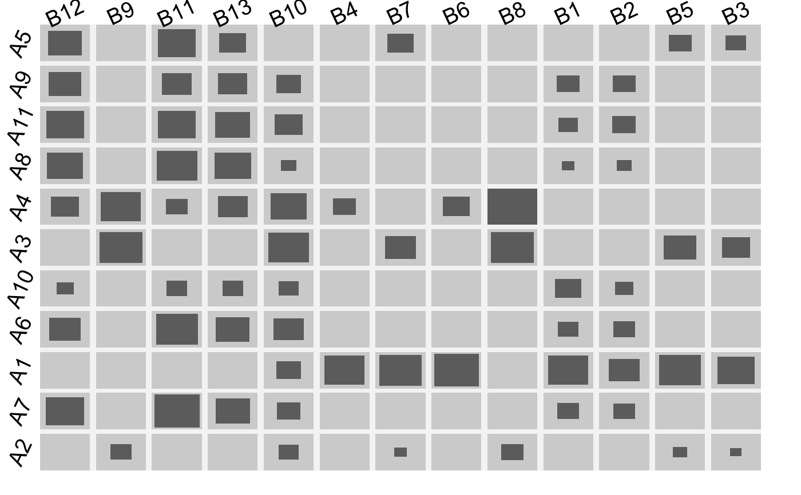
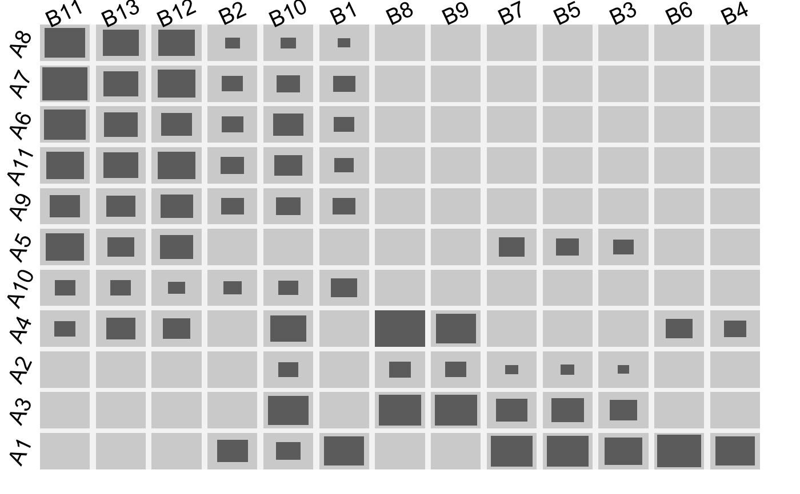
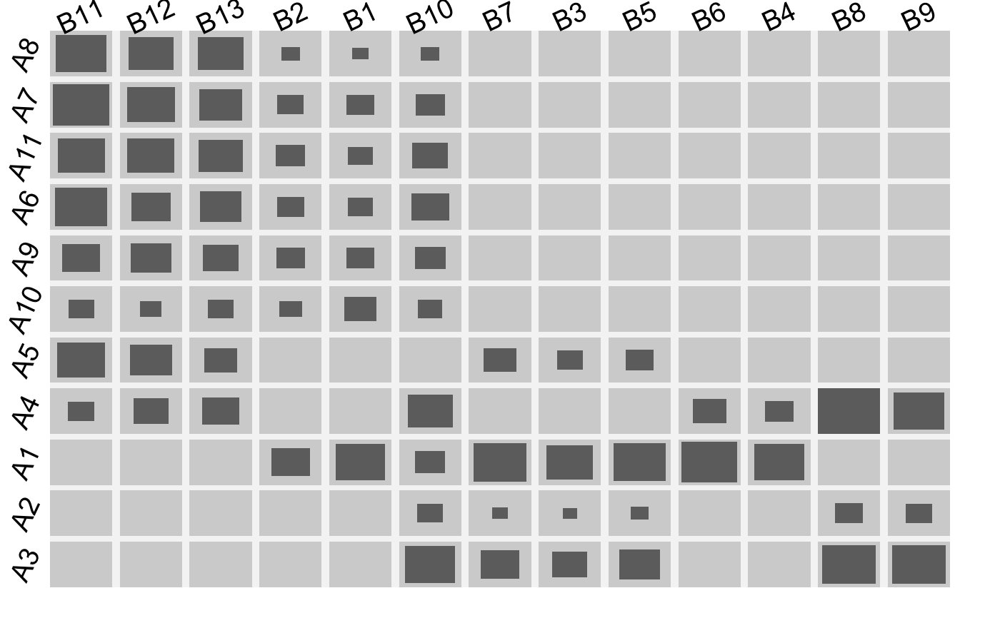
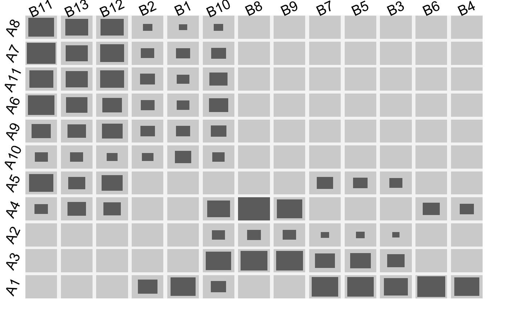
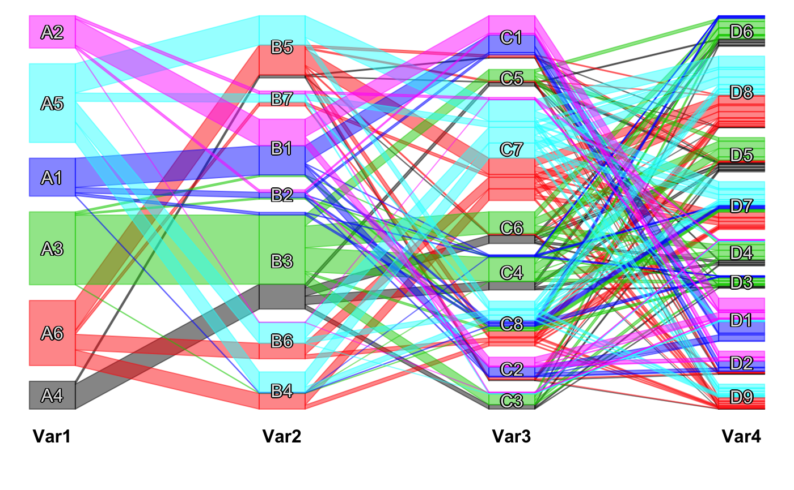
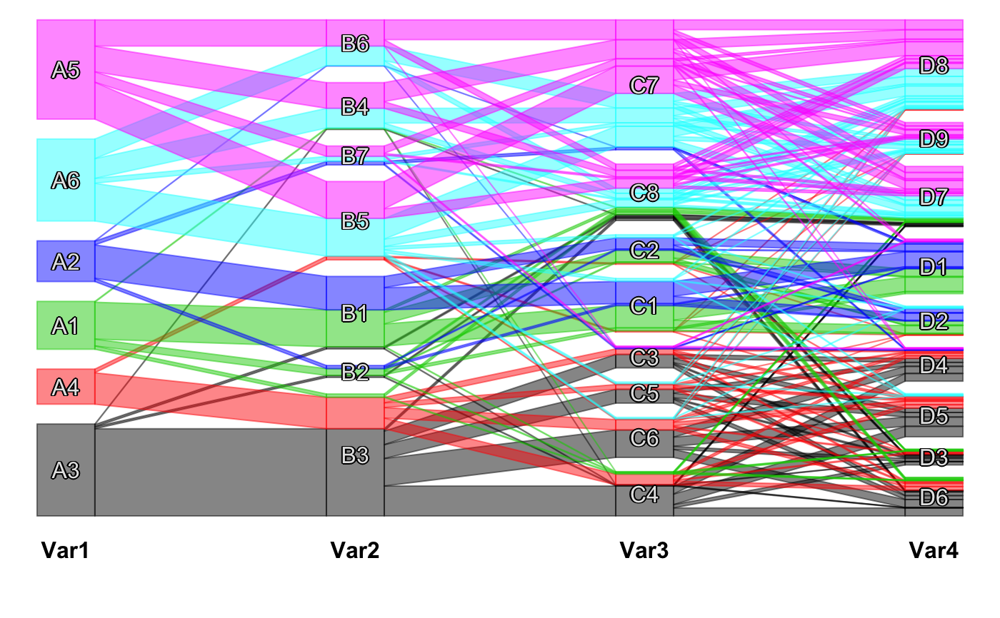

optile.RdThis function will take a categorical data object (data.frame, table, ftable, matrix, array) and optimize its category orders.
Most of the implemented techniques aim for a (pseudo-) diagonalization of the data matrix or table. This improves graphical representations (e.g. by minimizing crossings in scpcp plots) and can also be useful to compute clusters (e.g. via cfluctile).
The function offers an interface which will by default return the same type of object that has been passed to the function such that it is possible to
write myplot( optile(x) ) for an optimized version of myplot(x).
It is possible to use custom reordering functions (as long as they meet the requirements , see details).
optile(x, fun = "BCC", foreign = NULL, args = list(), perm.cat = TRUE, method = NULL, iter = 1, freqvar = NULL, return.data = TRUE, return.type = "data.frame", vs = 0, tree = NULL, sym = FALSE, …) # S3 method for list optile(x, fun = "BCC", foreign = NULL, args = list(), perm.cat = TRUE, method = NULL, iter = 1, freqvar = NULL, return.data = TRUE, return.type = "table", vs = 0, tree = NULL, sym = FALSE, k = NULL, h = NULL, …)
| x | The categorical data of one of the following classes: |
|---|---|
| fun | The optimization function. Currently available are: |
| foreign | Where to find the optimization function |
| args | further arguments which will be passed to |
| perm.cat | A logical vector indicating which variables are reordered and which will remain untouched.
For example |
| method | Either |
| iter | Some optimizations depend on the initial category orders (e.g. |
| freqvar | The name of the frequency variable, if any. |
| return.data | Whether to return the data or just the new orders. |
| return.type | The class of the object which will be returned. Defaults to the input type. |
| vs | An optional version number. |
| tree | A list whose entries are either tree objects (e.g. from hclust) or the string |
| sym | If |
| k | A vector of integers specifying the numbers of clusters into which the tree objects shall be cut. See subtree. |
| h | Instead of a number of clusters |
| … | dots |
The optile interface makes it possible to resort the categories in different representations of categorical data.
The most important points to know are
| The function by default returns the same type of object as was passed in the function call. |
| It is possible to specify custom optimization functions via |
fun |
| and |
foreign |
| . |
| The function is able to handle tree objects which specify a hierarchical tree graph on the categories. |
| The function can pass either multidimensional tables, |
| the corresponding Burt matrix ( |
method = "joint" |
| ) |
| or a hierarchical series of tables ( |
method = "stepwise" |
| ) to the optimization functions. |
How to add a custom optimization function:
It is possible to use custom functions for the optile interface as long as they meet the following requirements:
The function should have the form
fun( data, dims, perm.cat, ... ) or
foreign( "fun", data, dims, perm.cat, ...)
where fun is the name of the function and foreign is ".Call", ".C", ...
The function returns a vector of the new category orders (minus 1) and the resulting criterion, e.g. c( 0,2,4,1,3, 4,3,2,1,0,5,6, 0.7612 )
dims is a vector with the number of categories for each variable and perm.cat is a 0/1 vector which indicates whether or not to change the category order of a variable.
There are three possible types for the data argument of fun which can be set via method:
The argument method can be one of NULL, "stepwise" or "joint".
The default method = NULL indicates that fun accepts a multidimensional table as for instance can be produced via xtabs.
If method = "joint" a Burt matrix is computed and passed to fun (c.f. Burt). For instance "fun=casort" uses this data representation.
method = "stepwise" or method = "sw" passes fun, data, foreign as well as any args to a function called steptile which initially builds a 2-way table of the first pair of variables, passes it to fun and stores the computed category orders. Afterwards the other variables are added one by one. i.e. in a step for the k-th variable the function passes a k-way table to fun and a new category order for this variable is computed given the (already fixed) category orders of the variables 1 to k-1. This version is well suited for hierarchical visualizations like classical mosaicplots. A slightly different implementation which is not embedded in the optile framework but uses optile as its workhorse is steptile.
CURRENTLY AVAILABLE REORDERING FUNCTIONS:
"BCC" and "WBCC": minimize the Bertin Classification Criterion and the Weighted Bertin Classification Criterion.
BCC is the number of observation pairs which are not fully concordant among all relevant observation pairs (pairs which differ in all variables). A pair of observations a and b is fully concordant if all entries in a are smaller than those in b or vice versa. Full concordance results in a so-called pseudo-diagonal. WBCC uses the Hamming distance between the observations as weights for the contradictions to such a diagonal form and also takes pairs within the same row or column into account.
"casort": computes a correspondence analysis (SVD) and sorts by the first coordinate vector of each dimension. For more than two dimensions Multiple CA based on the Burt matrix is used.
"rmca":
Adopts the idea of CA for k > 2 dimensions without dropping information: For each dimension d = 1..k with categories d1...dr compute the scaled average k-1 dimensional profile sdd and perform an SVD of (sd1...sdr)-sdd. Like in correspondence analysis the first coordinate vector is used for the reordering.
"csvd":
For each variable d in 1..k (iteratively)
compute the cumulative sums over the multidimensional table for each variable except d. Transform this multidimensional table to an r x s matrix with r being the number of categories of variable d and s being the product of these numbers for all other variables.
Resort the categories of variable d by the first coordinate vector of an SVD of that matrix.
Repeat this procedure for all variables in turn until a stopping criterion is met.
Idea: for any variable h != d we have h1 < h2 < ... < hx due to the cumulative sums. Hence the current order of the categories will (tend to) be the same as in the coordinates of the svd which means that the svd computes coordinates for variable d with respect to the current category orders of the other variables. The algorithm uses casort for an initial solution to start from.
"distcor":
Two-way tables or matrices can also be optimized by means of the distance correlation. See wdcor.
"IBCC":
Iteratively sorts the categories of one variable at a time. Therefore it computes the average over the remaining dimensions and scales the profiles of each category as well as the average profile. It then computes the classification criterion between each category profile and the average profile which results in one value per category. The categories are then sorted by this criterion.
The procedure is very quick and yields good results in most cases. It strongly depends on the initial category orders as do the BCC or WBCC algorithms.
This function is written in C which means that foreign =".Call" must be set. Alternatively it can be used to presort the data via the shortcut presort = TRUE but this is deprecated and not recommended.
"distcor":
Two-way tables or matrices can also be optimized by means of the distance correlation. See wdcor.
"barysort":
Uses the barycenter heuristic to minimize the number of crossings heuristically. The heuristic is fast and yields good results but only works for two dimensions. For multiple dimensions use either "IBCC" or steptile.
In optile the barysort is implemented in C and therefore requires foreign = ".Call").
The function returns the reordered data. The return type is by default the same as the input type but can be redefined via return.type.
Some parts of the code have been developed for the Google Summer of Code 2011.
#> viewport[base]#> viewport[base]#> viewport[base]#> viewport[base]#> viewport[base]dev.new()#>fluctile(A3)# NOT RUN { ############ ------------ EXAMPLE I ------------ ############ # ----- Cluster results from the Current Population Survey ----- # data(CPScluster) cpsX = subtable(CPScluster,c(5, 26, 34, 38, 39), allfactor=TRUE) # joint and stepwise optimization of BCC ss <- optile(cpsX,presort=TRUE, return.data=TRUE, method="joint") ss2 <- optile(cpsX,presort=TRUE, return.data=TRUE, method="sw") # original cpcp plot cpcp(cpsX) # cpcp for joint algorithm cpcp(ss) # cpcp and fluctuation for the stepwise algorithm # (should be good for pcp plots and hierarchical plots) fluctile(xtabs(Freq~.,data=ss2[,-4])) cpcp(ss2) # The multivariate algorithm ss3 <- optile(cpsX,presort=TRUE, return.data=TRUE, method=NULL) cpcp(ss3) # cpcp for casort algorithm ssca <- optile(cpsX,presort=FALSE, fun = "casort", return.data=TRUE, method="joint") cpcp(ssca) # cpcp for rmca algorithm results. works better for the dmc data ssR <- optile(cpsX,presort=FALSE, fun = "rmca", return.data=TRUE, method=NULL) cpcp(ssR) # cpcp for csvd algorithm ssC <- optile(cpsX,presort=FALSE, fun = "csvd", return.data=TRUE, method=NULL) fluctile(xtabs(Freq~.,data=ssC[,-4])) cpcp(ssC) # cpcp for presort algorithm with 20 iterations ssP <- optile(cpsX,presort=FALSE, fun = "IBCC", return.data=TRUE, method=NULL, foreign = ".Call",iter=20) cpcp(ssP) ############ ------------ EXAMPLE II ------------ ############ # ------------------------------- Italian wines ------------------------------ # library(MMST) data(wine) swine <- scale(wine[,1:13]) kmd <- data.frame(wine$class, replicate(9, kmeans(swine, centers = 6)$cluster) ) kmd <- subtable(kmd, 1:10, allfactor = TRUE) cpcp(kmd) # there is a good joint order and hence the joint result is better than the stepwise kmd2 <- optile(kmd, method = "sw") kmd3 <- optile(kmd, method = "joint") cpcp(kmd2) cpcp(kmd3) ############ ------------ EXAMPLE III ------------ ############ # ---------------- The BicatYeast microarray dataset ---------------- # # ----- with different clusterings for the genes ----- # library(biclust) data(BicatYeast) Dby <- dist(BicatYeast) hc1 <- hclust(Dby, method = "ward") hc2 <- hclust(Dby, method = "average") hc3 <- hclust(Dby, method = "complete") hcc1 <- cutree(hc1, k = 6) hcc2 <- cutree(hc2, k = 6) hcc3 <- cutree(hc3, k = 6) km1 <- kmeans(BicatYeast, centers = 6, nstart = 100, iter.max = 30)$cluster library(mclust) mc1 <- Mclust(BicatYeast, G = 6)$class clusterings <- data.frame(hcc1,hcc2,hcc3,km1,mc1) clusterings <- subtable(clusterings, 1:5, allfactor = TRUE) clusterings2 <- optile(clusterings, method = "joint") clusterings3 <- optile(clusterings, fun = "casort") cpcp(clusterings2) # a fluctuation diagram of all but the avg. clustering fluctile(xtabs(Freq~.,data=clusterings2[,-2])) # compute agreement via Fleiss kappa in irr: require(irr) rawdata <- untableSet(clusterings2) for(i in 1:5) levels(rawdata[,i]) <- 1:6 (kappam.fleiss(rawdata)) (kappam.fleiss(rawdata[,-2])) ## Let's have a look at kmeans with 2:12 clusters library(biclust) data(BicatYeast) cs <- NULL for(i in 2:12) cs <- cbind(cs, kmeans(BicatYeast, centers=i,nstart=100)$cluster) cs <- as.data.frame(cs) names(cs) <- paste("V",2:12,sep="") ocs <- optile(cs,method="joint") cpcp(ocs,sort.individual=TRUE) # and set alpha-blending, show.dots = TRUE # and with hierarchical clusterings cs2 <- NULL library(amap) hc <- hcluster(BicatYeast) for(i in 2:20) cs2 <- cbind(cs2, subtree(hc,k=i)$data) cs2 <- as.data.frame(cs2) names(cs2) <- paste("V",2:20,sep="") cpcp(cs2,sort.individual=TRUE) # and set alpha-blending to about 0.6, show.dots = TRUE, then ss <- iset() ibar(ss$V6) # and VIEW >> Set color (rainbow) # Ideally the axes would be at a distance according to the heights of the cuts. # e.g. for the first 12 clusters (after that there are some cuts at about the same height) # the complete dendrogram doesn't look too attractive: plot(hc) # and plotting the top cuts only omits the information # on how many cases are in each node or leaf xcoords <- rev(tail(hc$height,11)) xcoords <- xcoords/max(hc$height) ycoords <- data.matrix(ss[,20:30]) ycoords <- apply(ycoords,2,function(s){ y <- s - min(s) y <- y/max(y) return(y) }) ycoords <- cbind(ycoords, as.integer(as.matrix(ss[,5]))) colv <- rainbow_hcl(6) dev.new() par(mfrow=c(1,2)) plot(1,pch="", xlim=c(0,1), ylim=c(min(xcoords)-0.007,1)) apply(ycoords,1,function(s){ points(x=s[-12], y=xcoords,) points(x=s[-12],y=xcoords,pch=19, col = colv[s[12]]) lines(x=s[-12], y=xcoords, col = colv[s[12]]) }) hc$height <- hc$height/max(hc$height) plclust(subtree(hc,12),hang=0.02) ############ ------------ EXAMPLE IV ------------ ############ # ------------------------- The Eisen Yeast data ------------------------- # library(biclust) data(EisenYeast) SEY <- scale(EisenYeast) Dby2 <- dist(SEY) hc1 <- hclust(Dby2, method = "ward") hc2 <- hclust(Dby2, method = "complete") hcc1 <- cutree(hc1, k = 16) km1 <- kmeans(scale(EisenYeast), centers = 16, nstart = 20, iter.max = 30)$cluster optile( table(hcc1, km1) ) ############ ------------ EXAMPLE V ------------ ############ # ------------------------- The Bicat Yeast data ------------------------- # # how many clusters are a good choice for kmeans? # one possible way to find out: # compute kmeans for 100 random initial settings, sort the results (clusters) # and compute their agreement # e.g. via Fleiss' Kappa (available in package irr) require(biclust) data(BicatYeast) require(irr) st <- Sys.time() fk <- NULL for(k in 3:8){ test <- subtable(replicate(100,kmeans(BicatYeast, centers = k)$cluster),1:100) test <- optile(test, fun = "casort") test <- optile(test, method="joint") test <- untableSet(test) for(i in 1:100) levels(test[,i]) <- 1:k fk <- c(fk,kappam.fleiss(test)$value) } Sys.time()-st plot(x = 3:8, y = fk, type="l", lwd=2) ############ ------------ EXAMPLE VI ------------ ############ # ------------------------- hierarchical clustering ------------------------- # # A list with hierarchical clustering objects: require(amap) hc1 <- hcluster(t(plants[,-1]), method="manhattan", link = "ward") hc2 <- hcluster(t(plants[,-1]), method="manhattan", link = "complete") hclist <- list(hc1, hc2) tfluctile( optile(hclist, k= c(8,8) ) ) # or a table with corresponding tree objects: tt <- table( subtree(hc1, 12)$data, subtree(hc2, 8)$data ) tfluctile(optile(tt, tree = list(hc1, hc2))) # only one tree object, the other variable is free: tt <- table( subtree(hc1, 8)$data, kk <- kmeans(t(plants[,-1]),centers=8)$cluster ) tfluctile(optile(tt, tree = list(hc1, NA))) # }